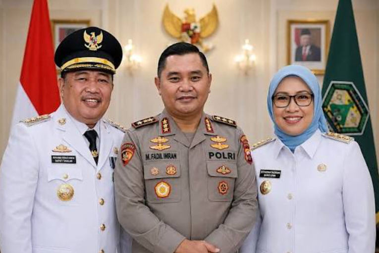

BERITA |
Belum Genap Sebulan Usai Komjen Fadil Imran Pensiun, Husniah Talenrang Ditetapkan TersangkaJumat : Dipublikasikan: 25 September 2026 20:20
 Bupati Takalar M Firdaus, Komjen Fadil Imran, Bupati Gowa Husniah Talenrang. (Ist) JAKARTA — Status hukum Bupati Gowa Sitti Husniah Talenrang berubah menjadi tersangka hanya sekitar satu bulan setelah kakaknya, Komjen Pol (Purn) Mohammad Fadil Imran, memasuki masa purnatugas dari Polri, pada 30 Agustus 2026 lalu. Kortastipidkor Polri menetapkan Husniah sebagai tersangka dalam perkara dugaan pemerasan, pungutan liar, gratifikasi terkait pengurusan Persetujuan Bangunan Gedung (PBG) dan perizinan lainnya di Kabupaten Gowa periode 2025-2026. Penetapan itu berlangsung setelah penyidik menggelar perkara di Mabes Polri pada Kamis, 24 September 2026. Nama Fadil Imran ikut menjadi sorotan dalam perkembangan perkara tersebut karena Husniah merupakan adik kandungnya. Hubungan keluarga itu sebelumnya juga muncul dalam polemik hukum dan politik yang melibatkan Bupati Gowa. Namun, keluarga besar Fadil Imran telah menyatakan tidak akan mencampuri proses hukum yang berkaitan dengan Husniah. Mereka juga menegaskan bahwa persoalan yang muncul dalam kapasitas Husniah sebagai kepala daerah harus dipertanggungjawabkan secara pribadi. ← Kembali ke Beranda. |